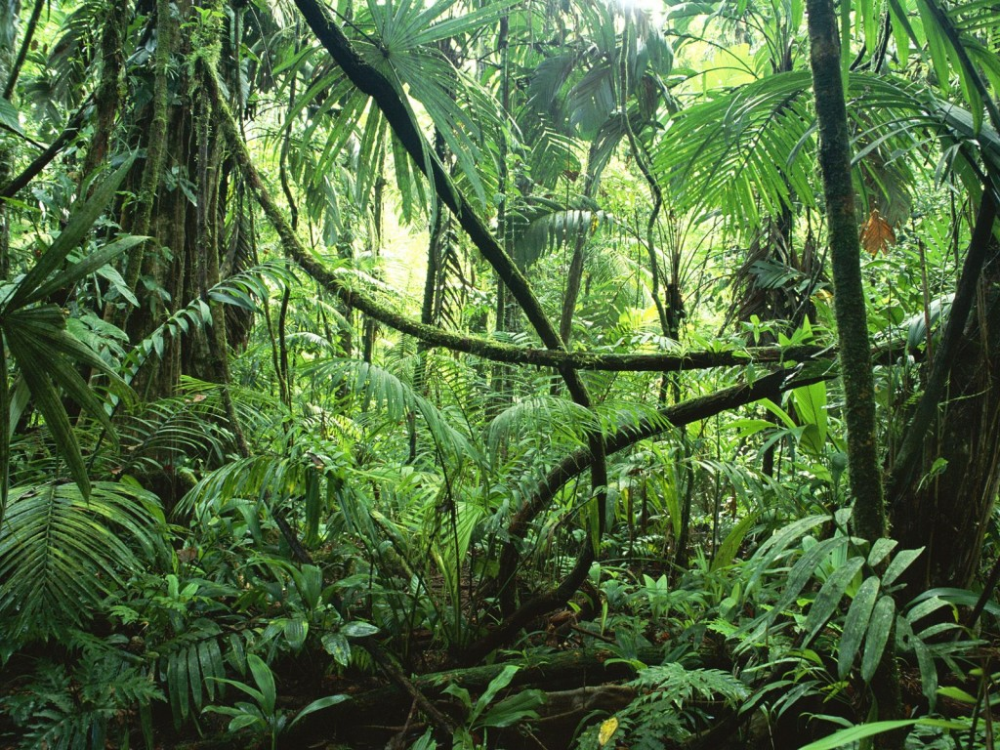

A broad-leaved tree is any tree that has wide leaves, rather than slim, needle-like leaves as found in conifers. Most broad-leaved trees are deciduous, such as birch, elm, oak, and maple, but some such as arbutus and live oak are evergreen; the latter type are most common in subtropical or tropical climates. These are the ones found in the Amazon Rainforest as you can see in the image below.
